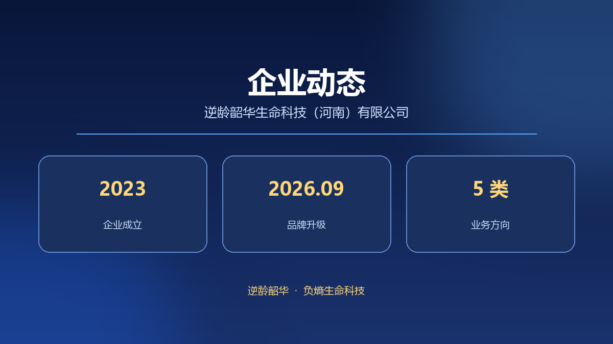

逆龄韶华生命科技（河南）有限公司成立于 2023 年 3 月 23 日，注册资本 100 万元人民币。公开登记的经营范围条目较多，按业务属性可归纳为科学研究、技术服务、健康服务、商贸流通与品牌文化五个方向。
科学研究：从实验室出发
研究类条目包括医学研究和试验发展、自然科学研究和试验发展、农业科学研究和试验发展、工程和技术研究和试验发展，以及细胞技术研发和应用、人体干细胞技术开发和应用、人体基因诊断与治疗技术开发、生物基材料技术研发、新材料技术研发等。
技术服务与健康服务：把研究接到应用
技术服务类条目涵盖技术开发、技术咨询、技术交流、技术转让、技术推广，以及科技中介服务、信息技术咨询服务、科普宣传服务。健康服务类条目则包括健康咨询服务（不含诊疗服务）、养生保健服务（非医疗）、中医养生保健服务（非医疗）与远程健康管理服务。
商贸流通与品牌文化：让产品抵达日常
商贸类条目包括食品互联网销售（仅销售预包装食品）、食品销售（仅销售预包装食品）、食用农产品零售与批发、农副产品销售、化妆品批发零售、第一类医疗器械销售、日用百货销售、货物与技术进出口等。品牌文化类条目涵盖品牌管理、企业管理咨询、市场营销策划、广告设计制作发布、会议及展览服务与组织文化艺术交流活动。
五个方向彼此衔接：理论研究提供概念起点，技术服务与健康服务承接应用，商贸流通把主食类食品带到消费场景，品牌与文化类服务则承担对外沟通与产业协作。
逆龄韶华 · 以负熵科学为底座，把前沿理念落到可长期坚持的日常饮食。